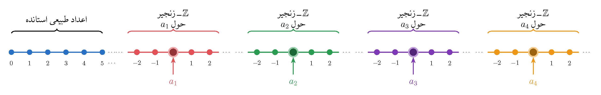
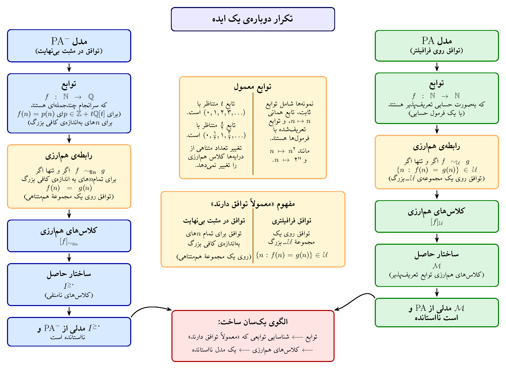

فراتر از اعداد طبیعی
دربارهی این مقاله. این نوشته مکمل نوشتهی امیر اصغری در معرفی حمید لسان است [۱]. رسالهی دکتری لسان، با عنوان Models of Arithmetic، که در سال ۱۹۷۸ در دانشگاه منچستر به پایان رسید و در سال ۲۰۱۳ تجدید چاپ شد [۲]، به مدلهای نااستاندهیNonstandard models حساب میپرداخت. هدف ما در اینجا مرور این رساله نیست، زیرا چنین کاری مستلزم آشنایی با حوزههای پیشرفتهی منطق ریاضی است؛ بلکه میخواهیم خوانندگان را با موضوع کلی آن، یعنی نظریهی ساختاری مدلهای نااستاندهی حساب، آشنا کنیم.
اهمیت این موضوع به پرسشهای مربوط به مبانی ریاضیات محدود نمیشود. آبراهام رابینسونAbraham Robinson با پایهریزی آنالیز نااستاندهNonstandard analysis از گسترشهای نااستاندهی دستگاه اعداد حقیقی بهره گرفت تا چارچوبی دقیق برای بینهایتکوچکها و روشهای مرتبط در آنالیز فراهم کند [۶، ۷]. در زمینهای دیگر، مدلهای نااستانده در علوم کامپیوتر نظری کاربرد یافتهاند؛ این مدلها ابزارهایی برای بررسی پیچیدگی محاسباتی و طول برهانهای گزارهای فراهم میکنند [۸، ۹]. این پیوندها انگیزهی دیگری برای درک این موضوع فراهم میکنند که چرا حساب میتواند مدلهای نااستانده داشته باشد.
از دیدگاه نظریهی مدل، دستگاه اعداد طبیعی یکی از ساختارهای بنیادی ریاضیات است: دنبالهها، الگوریتمها، فرمولها، و حتی برهانهای صوری را میتوان با اعداد طبیعی کدگذاری کرد. برای مطالعهی چنین ساختاری، نخست باید زبانی برای عناصر، عملها و روابط آن مشخص کرد. برای این منظور، در ادامه زبان حساب را با جزییات بیشتری بررسی میکنیم.
سخنی دربارهی زبانهای مرتبهاول
پیش از معرفی زبان حساب، بیاید به اختصار یادآوری کنیم که منظور از یک زبان مرتبهاولFirst-order language چیست. چنین زبانی شامل نمادهایی برای ساختارهای ریاضی مورد نظر — برای مثال، نمادهایی برای عملها و روابط —، به همراه نمادهای منطقی معمول زیر است:
\[ \neg,\qquad \wedge,\qquad \vee,\qquad \longrightarrow,\qquad \forall,\qquad \exists,\qquad =. \]چهار نماد نخست همان رابطهای بولی آشنا هستند: $\neg\varphi$ یعنی «نقیضِ $\varphi$»، $\varphi\wedge\psi$ یعنی «$\varphi$ و $\psi$»، $\varphi\vee\psi$ یعنی «$\varphi$ یا $\psi$»، و $\varphi\to\psi$ یعنی «اگر $\varphi$، آنگاه $\psi$». نمادهای $\forall$ و $\exists$ سورهاQuantifiers هستند:
$\forall x\,\varphi(x)$ یعنی «برای هر $x$، $\varphi(x)$»،
و
$\exists x\,\varphi(x)$ یعنی «$x$ای وجود دارد که $\varphi(x)$».
عبارتهایی که مطابق قواعد نحوی معمول از نمادهای زبان، متغیرها، تساوی، رابطهای بولی و سورها ساخته میشوند فرمولFormula نام دارند. وقوع یک متغیر در یک فرمول را مقیدBound مینامیم هر گاه در حوزهی تاثیر سوری متناظر قرار داشته باشد؛ در غیر این صورت، آزادFree است. متغیری را در یک فرمول آزاد مینامیم هر گاه در آن فرمول وقوع آزادی داشته باشد. به عنوان مثال، در فرمولِ
\[ \exists y\,(x=y) \]وقوع $y$ به وسیلهی سور $\exists y$ مقید است، در حالی که $x$ آزاد است. فرمولی که هیچ متغیر آزادی ندارد جملهSentence نامیده میشود. بنابراین یک جمله، بدون آنکه ابتدا مقداری به متغیرها نسبت داده شود، در یک ساختار میتواند صادق یا کاذب باشد.
پس آنچه در این چارچوب یک زبان ریاضی را از زبانی دیگر متمایز میکند نمادهای منطقی آن نیست — زیرا که این نمادها ثابتاند — بلکه نمادهای غیرمنطقیNonlogical symbols آن است: نمادهایی که برای توصیف عملها و روابط ساختارهای مورد مطالعه برگزیده میشود.
یک نمونهی آشنا، زبان مرتبهاول $L_G$ برای گروهها است. میتوانیم زبان $L_G$ را دارای تنها یک نماد غیرمنطقی $*$ برای عملی دوتایی در نظر بگیریم. میتوان گروهها را تنها با استفاده از همین زبان اصلبندی کرد. شرکتپذیری با جملهی زیر بیان میشود:
\[ (G_1):\quad \forall x\,\forall y\,\forall z\,\bigl((x*y)*z=x*(y*z)\bigr). \]گرچه معمولاً گروه را به صورت $(G,*,e,{}^{-1})$ مینویسیم، عنصر همانی و عمل معکوس به وسیلهی $*$ تعریفپذیرDefinableند. به بیان دقیقتر، عنصر همانی تنها عنصری است که در $L_G$-فرمول زیر صدق میکند:
\[ \operatorname{Id}(e)\;:\Longleftrightarrow\;\forall x\,(e*x=x\wedge x*e=x). \]و اینکه $y$ معکوس $x$ است با $L_G$-فرمول زیر بیان میشود:
\[ \operatorname{Inv}(e,x,y)\;:\Longleftrightarrow\;(x*y=e\wedge y*x=e). \]بنابراین وجود عنصر همانی و معکوس را نیز، بدون افزودن نمادی در زبان برای هیچکدام، میتوان با جملهی زیر بیان کرد:
\[ (G_2):\quad \exists e\ \bigl(\operatorname{Id}(e)\ \wedge\ \forall x\,\exists y\,(\operatorname{Inv}(e,x,y))\bigr). \]بنابراین یک گروه صرفاً یک $L_G$-ساختارِ $(G,*)$ است که دو جملهی $G_1$ و $G_2$ را برآورده میکند.
دو ساختار مشخص برای همین زبان عبارتاند از گروه جمعی $(\mathbb Z,+)$، که در آن $*$ به صورت جمع تعبیر میشود، و گروه $(S_3,\circ)$ شامل شش جایگشت از سه شیء، که در آن $*$ به صورت $\circ$ (یعنی ترکیب) تعبیر میشود. اولی نامتناهی و آبلی است و دومی متناهی و ناآبلی، اما هر دو را می توان به عنوان ساختارهایی برای یک زبان تلقی کرد. این مطلب نکتهی مهمی را روشن میکند: یک زبان مشخص میکند دربارهی چه چیزهایی میتوان سخن گفت، اما تعیین نمیکند که دربارهی کدام ساختار صحبت میکنیم؛ نمادهای غیرمنطقی آن ممکن است در ساختارهای مختلف تعبیرهای متفاوتی داشته باشند.
اگر $M$ یک ساختار و $\varphi$ یک جملهی مرتبهاول باشد، عبارتِ
\[ M\models\varphi \]خوانده میشود «$M$، $\varphi$ را برآورده میکند» یا به سادگی «$\varphi$ در $M$ صادق است». به طور کلیتر، اگر $\varphi(x_1,\ldots,x_n)$ فرمولی باشد که $x_1$، $\ldots$، $x_n$ فهرستی از متغیرهای آزاد آن، و $a_1$، $\ldots$، $a_n$ عناصری از $M$ باشد، آنگاه عبارتِ
\[ M\models\varphi(a_1,\ldots,a_n) \]به این معناست که هر گاه متغیرهای آزاد $\varphi$ با $a_1$، $\ldots$، $a_n$ تعبیر شود، $\varphi$ در $M$ صادق باشد.
در اینجا یک مثال ساده میآوریم. $L_G$-فرمول $\varphi(x,y)$ برابر با $x*y=y*x$ را در نظر بگیرید. توجه کنید که هر دو متغیر $x$ و $y$ در $\varphi$ آزادند. در گروه $S_3$ عناصر زیر را در نظر بگیرید:
$a_1=(1\,2\,3)$ و $a_2=(1\,3\,2)$.
چون $a_2=a_1^{-1}$، این دو جایگشت با هم جابهجا میشوند. بنابراین:
\[ (S_3,\circ)\models\varphi(a_1,a_2). \]به بیان دیگر، فرمول $\varphi(x,y)$ در ساختار $S_3$ هنگامی صادق است که $x$ با $(1\,2\,3)$ و $y$ با $(1\,3\,2)$ تعبیر شود. در مقابل، $(1\,2)$ و $(2\,3)$ با هم جابهجا نمیشوند، پس
\[ S_3\models\lnot\varphi\bigl((1\,2),(2\,3)\bigr). \]مطابق معمول، هرگاه خطر ایجاد ابهام نباشد، از یک نماد یکسان برای ساختار و مجموعهی عناصر آن (یا دامنهDomain) استفاده میکنیم. بنابراین اگر $M$ یک ساختار باشد، میتوانیم هم بنویسیم $a\in M$ و هم $M\models\varphi$؛ در عبارت نخست $M$ به دامنهی ساختار اشاره دارد و در عبارت دوم به خود ساختار. تنها هنگامی که مفید باشد این دو را صریحاً از یکدیگر متمایز میکنیم.
منظور از یک نظریهTheory مجموعهای از جملهها در یک زبان مشخص است. اگر $T$ یک نظریه باشد، $M\models T$ یعنی $M$ همهی جملههای $T$ را برآورده میکند؛ در این صورت $M$ را مدلی از $T$A model of T مینامیم. بنابراین $M\models\PA$ یعنی $M$ همهی اصول نظریهی حساب پئانوPeano arithmetic را برآورده میکند؛ نظریهای که در بخش بعد با آن آشنا میشویم.
۱. اصول حساب
ما در زبان مرتبهاول زیر کار میکنیم:
\[ L_A=\{0,1,+,\cdot,\lt\}. \]اعداد طبیعیِ معمولی $L_A$-ساختار زیر را تشکیل میدهند:
\[ \N=(\{0,1,2,\ldots\},0,1,+,\cdot,\lt). \]در بحث ما، هر $L_A$-ساختاری که مجموعهی مشخصی از اصول حساب را برآورده کند مدلی از حسابA model of arithmetic نامیده میشود. یک مدل از حساب را استاندهStandard مینامیم هرگاه با $\N$ یکریخت باشد؛ در غیر این صورت آن را نااستاندهNonstandard مینامیم.
ابتدا نظریهی بدون استقراInduction-freeی $\PAm$ را معرفی میکنیم. این نظریه دقیقاً بخشهای نامنفی حلقههای مرتب گسسته را اصلبندی میکند، یعنی حلقههای مرتبی که در آنها $1$ کوچکترین عنصر مثبت است [۳، فصل ۲]. از $x\le y$ به عنوان مخفف $x\lt y\lor x=y$ استفاده میکنیم.
اصول $\PAm$. برای همهی $x,y,z$ها داریم:
- (P1)$(x+y)+z=x+(y+z)$
- (P2)$x+y=y+x$
- (P3)$(x\cdot y)\cdot z=x\cdot(y\cdot z)$
- (P4)$x\cdot y=y\cdot x$
- (P5)$x\cdot(y+z)=x\cdot y+x\cdot z$
- (P6)$x+0=x$ و $x\cdot0=0$
- (P7)$x\cdot1=x$
- (P8)$(x\lt y\wedge y\lt z)\to x\lt z$
- (P9)$\neg(x\lt x)$
- (P10)$x\lt y\lor x=y\lor y\lt x$
- (P11)$x\lt y\to x+z\lt y+z$
- (P12)$(0\lt z\wedge x\lt y)\to x\cdot z\lt y\cdot z$
- (P13)$x\lt y\to\exists z\,(x+z=y)$
- (P14)$0\lt 1$ و $x\gt 0\to x\ge1$
- (P15)$x\ge0$
هفت اصل نخست قوانین آشنای نیمحلقهی جابهجایی را بیان میکنند؛ اصول باقیمانده بیانگر این هستند که ترتیبْ خطی است، با عملهای حساب سازگاری دارد، و گسسته است. اصل (P13) میگوید اگر $x\lt y$، آنگاه تفاضل $y-x$ در بخش نامنفی موجود است. این اصلها در مجموع دقیقاً همان چیزی را به دست میدهند که با در نظر گرفتن بخش نامنفی یک حلقهی مرتب گسسته حاصل میشود.
اصول $\PA$. حساب پئانو با افزودن شِمای استقراInduction scheme به $\PAm$ به دست میآید. یعنی برای هر $L_A$-فرمول مرتبهاول $\varphi(x,\bar y)$، اصل زیر را اضافه میکنیم:
\[ \forall\bar y\,\Bigl[\bigl(\varphi(0,\bar y)\wedge\forall x\,[\varphi(x,\bar y)\to\varphi(x+1,\bar y)]\bigr)\to\forall x\,\varphi(x,\bar y)\Bigr]. \tag{1} \]بنابراین
$\boxed{\ \PA=\PAm+\ }$ استقرا برای هر فرمول مرتبهاول
این شِماScheme یک شِمای نامتناهی است، یعنی: به ازای هر $L_A$-فرمول $\varphi$ یک اصل استقرا داریم. تفاوت میان $\PAm$ و $\PA$ در دو ساختار نخست ما آشکار خواهد شد.
در بخش بعد، ابتدا تنها با استفاده از ابزارهای جبری یک مدل نااستانده از $\PAm$ میسازیم.
۲. مدلی نااستانده از $\PAm$
فرض کنید $t$ یک متغیر مستقل باشد و میدان زیر را در نظر بگیرید:
\[ K=\Q(t)=\left\{\frac{p(t)}{q(t)}:p,q\in\Q[t],\ q\ne0\right\}. \]ترتیبی روی $K$ در نظر میگیریم به طوری که متغیر حقیقی $t$ مثبت باشد و به سمت بینهایت میل کند. به بیان دقیقتر، برای تابع گویای ناصفر $f$ تعریف میکنیم:
$f\gt 0$ هرگاه برای همهی $r$های حقیقیِ بهاندازهی کافی بزرگ داشته باشیم $f(r)\gt 0$.
هر تابع گویای ناصفر از جایی به بعد علامت ثابتی دارد: برای $r$های بزرگ، علامت آن را ضرایب پیشروی صورت و مخرج تعیین میکنند. در نتیجه دقیقاً یکی از $f\gt 0$، $f=0$، یا $-f\gt 0$ برقرار است؛ قوانین معمول ترتیب نیز از نامساویهای نهایی نتیجه میشوند.
ارشمیدسی در برابر ناارشمیدسی. یادآوری میکنیم که میدان مرتب $F$ را ارشمیدسیArchimedean مینامیم هر گاه به ازای هر عنصر $x\in F$ عدد صحیح مثبت معمول $n$ای وجود داشته باشد به طوری که $x\lt n$. برای مثال، $\Q$ و $\mathbb R$ ارشمیدسیاند. میدان مرتب $F$ ناارشمیدسیNon-Archimedean است اگر شامل عنصر $a$ای باشد به طوری که:
برای هر عدد صحیح مثبت $n$ داشته باشیم $a\gt n$.۱
چنین عنصری را بینهایتبزرگInfinitely large مینامیم. به طور معادل، این میدان دارای یک بینهایتکوچکInfinitesimal مثبت است؛ به این معنا که شامل عنصر $\varepsilon\gt 0$ای است که:
برای هر عدد صحیح مثبت $n$ داشته باشیم $\varepsilon\lt\frac1n$.
در واقع، معکوس یک عنصر بینهایتبزرگ بینهایتکوچک است و برعکس.
گزارهی ۲.۱. $K$ یک میدان مرتب شامل $\Q$ است و
\[ 0\lt 1\lt 2\lt 3\lt\cdots\lt t. \]بهویژه، $K$ ناارشمیدسی است.
برهان. برای هر عدد صحیح ثابت $n$، چندجملهای $t-n$ از جایی به بعد مثبت است، پس $t\gt n$. از سوی دیگر، در هر میدان مرتب ارشمیدسی هر عنصر به وسیلهی یک عدد طبیعی از بالا کراندار میشود. بنابراین $K$ ارشمیدسی نیست.
در نتیجه $t$ بینهایتبزرگ و $1/t$، $1/t^2$، و $\ldots$ بینهایتکوچکاند. بنابراین میدان مرتب $K$ هم عناصر بینهایتبزرگ دارد و هم عناصر بینهایتکوچک، هرچند که عملهای حساب آن چیزی جز اعمال حساب توابع گویا نیست.
یادداشت تاریخی. این مثال نسخهای سادهشده از روش ساختی است که دیوید هیلبرتDavid Hilbert در Foundations of Geometry (۱۸۹۹، فصل ۱۲) به کار برد. هیلبرت میدان بزرگتری از توابع جبریِ $t$ را، بر حسب علامت آنها روی مقادیر مثبت به اندازهی کافی بزرگ $t$، مرتب کرد و از آن برای اثبات استقلال اصل ارشمیدسی در هندسه استفاده کرد [۱۸]. پیش از آن نیز پژوهشهایی روی هندسهی ناارشمیدسی توسط جوزپه ورونزهGiuseppe Veronese انجام گرفته بود [۱۹].
اکنون زیرحلقهای طبیعی از $K$ را در نظر میگیریم:
\[ I=\Z+t\Q[t]=\{m+a_1t+\cdots+a_dt^d:m\in\Z,\ a_i\in\Q\}. \tag{2} \]برای مثال، $t/2$، $t^2/7-3t+5$، و $t$ در $I$ هستند، اما $1/2$ در آن نیست. به آسانی میتوان دید که $I$ یک حلقه است.
گزارهی ۲.۲. حلقهی $I$ بهطور گسسته مرتب است. قویتر از آن این که، $I$ یک بخش صحیحInteger part از $K$ است: برای هر $f\in K$ عنصر $a\in I$ای وجود دارد به طوری که:
\[ a\le f\lt a+1. \tag{3} \]برهان. هر چندجملهای غیرثابت در $I$ از جایی به بعد یا از $1$ بزرگتر است یا از $0$ کوچکتر؛ و هر عنصر ثابت $I$ یک عدد صحیح است. پس $1$ کوچکترین عنصر مثبت $I$ است.
برای اثبات ادعای قویتر، طبق تقسیم چندجملهایها، هر $f\in K$ را میتوان به صورت زیر نوشت:
\[ f(t)=q(t)+\varepsilon(t),\qquad q\in\Q[t],\quad \varepsilon(t)\longrightarrow0\quad(t\to+\infty). \]قرار دهید $q(t)=p(t)+c$، که در آن $p\in t\Q[t]$ و $c\in\Q$. اگر $c$ عددی صحیح نباشد، برای $t$های بهاندازهی کافی بزرگ داریم $\lfloor c\rfloor\le c+\varepsilon(t)\lt\lfloor c\rfloor+1$؛ پس با قرار دادن $a=p+\lfloor c\rfloor$ برهان کامل است. اگر $c$ عددی صحیح باشد، در صورتی که $\varepsilon$ از جایی به بعد نامنفی باشد قرار میدهیم $a=p+c$، و در غیر این صورت $a=p+c-1$. در هر حالت $a\in I$ و (۳) برقرار است.
مجموعهی $I^{\ge0}=\{a\in I:a\ge0\}$ را، با همان عملها و ترتیبی که از $I$ به ارث میبرد، در نظر بگیرید. چون $I$ یک حلقهی مرتب گسسته است، نتیجه میگیریم که:
\[ \boxed{\quad (I^{\ge0},0,1,+,\cdot,\lt)\models\PAm.\quad} \]$I^{\ge0}$ یک مدل نااستانده از حساب ضعیف $\PAm$ است: عنصر $t$ از هر عدد طبیعی معمولی بزرگتر است. در واقع، بر هر عدد صحیح مثبت معمولی بخشپذیر است، زیرا $t/n\in I$.
نگاهی دیگر به این روش ساخت. میتوان مدل ساختهشده در بالا را به شیوهای سودمند بازنویسی کرد که زمینهساز ساخت مدل نااستاندهای از حساب پئانو در ادامهی بحث باشد. فرض کنید $\mathcal E$ مجموعهی همهی آن توابع $f:\N\to\Q$ای باشد که سرانجام یک چندجملهایEventually polynomial روی $I$ هستند: یعنی برای $p\in I$ای داشته باشیم:
برای همهی $n$های به اندازهی کافی بزرگ $f(n)=p(n)$.
تعریف میکنیم:
$f\sim_{\mathrm{fin}}g\iff$ برای همهی $n$های بهاندازهی کافی بزرگ $f(n)=g(n)$.
روی خانوادهی کلاسهای همارزی حاصل از رابطهی $\sim_{\mathrm{fin}}$ اعمال جمع و ضرب را به صورت نقطهبهنقطه و ترتیب را به صورت زیر تعریف میکنیم:
$[f]\lt[g]\iff$ برای همهی $n$های بهاندازهی کافی بزرگ $f(n)\lt g(n)$.
هر کلاس همارزی شامل یک تابع یکتای $n\mapsto p(n)$ است به طوری که $p\in I$ است؛ بنابراین داریم:
\[ \mathcal E/{\sim_{\mathrm{fin}}}\cong I. \]برای مثال، چندجملهای $t$ متناظر با کلاس تابع $n\mapsto n$ با مقادیر زیر است:
\[ 0,1,2,3,\ldots. \]و $t/2$ متناظر با کلاس $n\mapsto n/2$ است که مقادیر آن عبارتاند از:
\[ 0,\frac12,1,\frac32,2,\ldots. \]بنابراین بخش نامنفی این فضای خارجقسمتی صرفاً نمایش دیگری از مدل $I^{\ge0}$ از $\PAm$ است.
در نتیجه، با یکی گرفتن تابعهایی که از جایی به بعد با هم برابرند، یا بهطور معادل، روی زیرمجموعهای هممتناهیCofinite (یعنی زیرمجموعهای با مکمل متناهی) از $\N$ توافق دارند، ساختار حسابی جدیدی از تابعها ساختهایم. اهمیت این دیدگاه در ساخت مدلی از نظریهی قویتر $\PA$ در ادامه روشن خواهد شد.
ترتیب ساختار چه شکلی دارد؟ ترتیب این مدل خاص را نیز میتوان به صراحت توصیف کرد. عناصر استاندهی آن یک قطعهی آغازینInitial segment تشکیل میدهند؛ به این معنا که اگر $m$ یک عدد طبیعی معمولی باشد و $a\lt m$ در $I^{\ge0}$ صادق باشد، آنگاه $a=k$ برای یک $k\lt m$ معمولی:
\[ 0\lt 1\lt 2\lt 3\lt\cdots. \]اگر $a\in I^{\ge0}$ عنصری نااستانده باشد، آنگاه $a$ از هر عدد طبیعی معمولی بزرگتر است و از این رو دنبالهی زیر یک زنجیر دوسویه با نوع ترتیبOrder type $\Z$ تشکیل میدهد:
\[ \ldots\lt a-2\lt a-1\lt a\lt a+1\lt a+2\lt\ldots. \]دنبالهی فوق را یک $\Z$-زنجیرِZ-chain شامل $a$ مینامیم. دو عنصر نااستانده دقیقاً هنگامی در یک $\Z$-زنجیر قرار دارند که تفاضلشان یک عدد صحیح معمولی باشد. خودِ $\Z$-زنجیرهای متفاوت بهطور چگال مرتباند. در واقع، اگر $a\lt b$ در دو زنجیر متفاوت باشند، $b-a$ بینهایتبزرگ است. به کمک گزارهی ۲.۲، $d\in I$ را چنان انتخاب کنید که:
\[ d\le\frac{b-a}{2}\lt d+1. \]آنگاه $\Z$-زنجیر حول $a+d$ اکیداً میان زنجیرهای شامل $a$ و $b$ قرار میگیرد. همچنین هیچ زنجیر نااستاندهای نخستین یا آخرین زنجیر نااستانده نیست: برای مثال، زنجیر شامل جزء صحیح $a/2$ و زنجیر حول عنصر $2a$، به ترتیب، اکیداً کمتر و بیشتر از زنجیر حول $a$ هستند.
پس، همانگونه که در شکل ۱ نشان داده شده است، این مدل خاص تشکیل شده است از قطعهی آغازین استاندهی
\[ 0\lt 1\lt 2\lt 3\lt\cdots \]و پس از آن مجموعهای بهطور چگال مرتب از $\Z$-زنجیرها تشکیل شده است. بعداً به نوع ترتیب این تصویر بازخواهیم گشت.

چرا استقرا شکست میخورد؟ مثال زیر از این جهت سودمند است که نمونهی مشخصی از شِمای (۱) را نشان میدهد که برقرار نیست. فرمول زیر را در نظر بگیرید:
\[ \varphi(x)\;:\Longleftrightarrow\;\exists y\,\bigl(y^2\le x\lt(y+1)^2\bigr). \tag{4} \]این فرمول بیان میکند که $x$ میان دو مربع متوالی قرار دارد. فرمول برای $0$ صادق است. افزون بر این، در هر حلقهی مرتب گسسته، اگر $y^2\le x\lt(y+1)^2$، آنگاه یا $x+1\lt(y+1)^2$ است (پس همان $y$ برای $x+1$ کار میکند)، یا $x+1=(y+1)^2$ است (پس $y+1$ کار میکند). بنابراین $\varphi(x)\to\varphi(x+1)$ نیز در سراسر $I^{\ge0}$ برقرار است.
اما $\varphi(t)$ کاذب است: اگر $y\in I^{\ge0}$ غیرثابت باشد، با مقایسهی درجات چندجملهایها $y^2\gt t$؛ و اگر $y$ ثابت باشد، یک عدد صحیح نامنفی معمولی است و $(y+1)^2\lt t$. پس هیچ $y$ای (۴) را برای $x=t$ برآورده نمیکند. بنابراین
\[ I^{\ge0}\not\models\PA. \]روش ساخت بعدی دقیقاً این نقص را برطرف میکند.
۳. برهانی کوتاه برای وجود با بهرهگیری از فشردگی
وجود مدلهای نااستاندهی حساب پئانو را میتوان با برهانی بسیار کوتاه نشان داد. این برهان بر قضیهای کلی در منطق مرتبهاول تکیه دارد که در ادامه، بدون برهان، بیان میکنیم (برای نمونه به [۱۷] نگاه کنید).
قضیهی ۳.۱ (قضیهی فشردگیCompactness برای منطق مرتبهاول). فرض کنید $T$ هر مجموعهای از جملههای مرتبهاول در یک زبان ثابت باشد. اگر هر زیرمجموعهی متناهی $T$ مدلی داشته باشد، آنگاه خود $T$ نیز مدلی دارد.
از یک قضیهی استانده دیگر در منطق مرتبهاول نیز، باز بدون برهان، استفاده خواهیم کرد.
قضیهی ۳.۲ (قضیهی لوونهایم-اسکولمLöwenheim–Skolem). اگر نظریهای در یک زبان مرتبهاول شمارا مدلی نامتناهی داشته باشد، آنگاه مدلی شمارا نیز دارد.
گزارهی ۳.۳. یک مدل شمارای نااستانده از $\PA$ وجود دارد.
برهان. یک نماد ثابت تازه $c$ به زبان حساب بیفزایید و نظریهی زیر را در نظر بگیرید (که در آن $\overline n$ عددنماNumeralی $n$ است؛ یعنی مجموع $n$تا عدد $1$، و یا در حالتی که $n=0$ برابر با $0$ است):
\[ T=\PA\;\cup\;\{\overline n\lt c:n\in\N\}. \]هر زیرمجموعهی متناهی $T$ مدلی دارد: نمادهای حسابی را با ساختار اعداد طبیعی معمولی تعبیر کنید و $c$ را بزرگتر از همهی تعداد متناهی عددنمای ذکرشده انتخاب کنید. در نتیجه، بنا بر فشردگی، $T$ مدلی دارد. چون $T$ نظریهای در یک زبان شماراست و هر مدل $T$ نامتناهی است، قضیهی لوونهایم-اسکولم مدلی شمارا از $T$ به دست میدهد. اکنون با فراموش کردن تفسیر $c$، مدل شمارای $M$ از $\PA$ باقی میماند که عنصری بزرگتر از هر عددنمای استانده دارد. پس $M$ نااستانده است.
برهان بالا مثل یک جعبهی دربسته است: فشردگی و لوونهایم-اسکولم وجود یک مدل شمارای نااستانده را تضمین میکنند، اما به ما نمیگویند عناصر و اعمال آن چگونه ساخته شدهاند. اکنون روش ساختی صریح ارائه میکنیم که عناصرش کلاسهای همارزیِ توابع آشنا هستند.
۴. یک مدل نااستانده از حساب پئانو
در این بخش گونهای از روش ساخت اسکولم برای یک مدل نااستاندهی حساب، متعلق به دههی ۱۹۳۰، را ارائه میکنیم [۵]. شکل ۲ رابطهی میان این روش ساخت و مدل پیشین ما از $\PAm$ را نشان میدهد.

گام ۱: یک فراپالایه روی مجموعههای تعریفپذیر
زیرمجموعهی $A\subseteq\N$ را حسابیArithmetical مینامیم هر گاه برای یک $L_A$-فرمول $\theta(n)$ داشته باشیم:
\[ A=\{n\in\N:\N\models\theta(n)\}. \]خانوادهی $\A$ از مجموعههای حسابی شماراست، همهی مجموعههای متناهی را دربر میگیرد، و نسبت به مکمل، اجتماع متناهی و اشتراک متناهی بسته است. آن را به صورت $A_0,A_1,\ldots$ فهرست کنید.
دنبالهای نزولی از مجموعههای حسابی نامتناهی $C_0\supseteq C_1\supseteq\cdots$ به صورت زیر میسازیم. قرار دهید $C_0=\N$. در مرحلهی $n$، دستِ کم یکی از $C_n\cap A_n$ و $C_n\setminus A_n$ نامتناهی است؛ یکی از این دو مجموعهی نامتناهی را به عنوان $C_{n+1}$ برگزینید. تعریف کنید:
$\U=\{A\in\A:$ $n$ای وجود دارد به طوری که $C_n\subseteq A\}$. (۵)
خانوادهی $\U$ شامل $\N$ است و نسبت به ابرمجموعههاSupersets و اشتراکهای متناهی بسته است. برای هر $A\in\A$، داریم $A\in\U$ یا $\N\setminus A\in\U$، زیرا $A$ در فهرست ما ظاهر میشود. ویژگیهای بیانشده در دو جملهی قبل برای $\U$ را خاصیت فراپالایهUltrafilter مینامیم. هیچ مجموعهی متناهی عضو $\U$ نیست، چون هر $C_n$ نامتناهی است. به زبان جبرهای بولی، $\U$ یک فراپالایهی غیراصلیNonprincipal روی جبر بولی $\A$ است. توجه کنید که این روش ساخت در ریاضیات معمولی انجام میشود؛ ادعا نمیکنیم که خود $\U$ در زبان حساب تعریفپذیر است.
گام ۲: دنبالههای تعریفپذیر و کلاسهای آنها
$\F$ را مجموعهی همهی توابع $f:\N\to\N$ قرار میدهیم که نمودارGraph آنها حسابی است؛ به این معنا که $L_A$-فرمول $\theta(x,y)$ای وجود دارد که نمودار $f$ را تعریف میکند (با در نظر گرفتن نمودار $f$ به عنوان زیرمجموعهای از حاصلضرب دکارتی $\N\times\N$). این توابع دقیقا توابع بهطور حسابی تعریفپذیرArithmetically definable functions هستند. هر تابع ثابت و تابع همانی $\mathrm{id}(n)=n$ در $\F$ قرار دارد. همچنین اگر $f,g\in\F$، آنگاه $f+g$ و $fg$ نیز در $\F$ قرار دارند.
برای $f,g\in\F$ تعریف میکنیم:
\[ f\sim g\quad\Longleftrightarrow\quad\{n:f(n)=g(n)\}\in\U. \]این یک رابطهی همارزی است. کلاس $f$ را با $[f]$ نشان میدهیم و قرار میدهیم $M=\F/\!\sim$. عملهای حساب را روی کلاسها به صورت نقطهبهنقطه تعریف میکنیم:
$[f]+[g]=[f+g]$ و $[f]\cdot[g]=[fg]$،
و قرار میدهیم:
\[ [f]\lt[g]\quad\Longleftrightarrow\quad\{n:f(n)\lt g(n)\}\in\U. \]این تعریفها به نمایندههای انتخابشده وابسته نیستند، زیرا $\U$ نسبت به اشتراکهای متناهی بسته است.
گام ۳: چرا هر $L_A$-جمله حفظ میشود؟
نتیجهی کلیدی زیر در زمینهی فراتوانها معمولاً قضیهی واشŁoś's theorem نامیده میشود.
لم ۴.۱ (لم صدق). برای هر $L_A$-فرمول $\psi(x_1,\ldots,x_k)$ و هر $f_1,\ldots,f_k\in\F$ داریم:
\[ M\models\psi([f_1],\ldots,[f_k])\quad\Longleftrightarrow\quad\{n:\N\models\psi(f_1(n),\ldots,f_k(n))\}\in\U. \tag{6} \]طرحی از برهان. برهان را با استقرا روی نحوهی ساخته شدن $\psi$ پیش میبریم. برای تساوی و نامساوی، قضیه از تعریف نتیجه میشود. برای نقیض از این واقعیت استفاده میکنیم که $\U$ دقیقاً یکی از یک مجموعهی تعریفپذیر و مکمل آن را در بر میگیرد. و برای عطف از بسته بودن نسبت به اشتراک استفاده میشود.
تنها حالت دشوار $\exists y\,\psi(\bar x,y)$ است. فرض کنید مجموعهی تمام اندیسهای $n$ای که در آنها شاهدی برای $\psi(f_1(n),\ldots,f_k(n),y)$ وجود دارد عضو $\U$ باشد. برای همهی چنین $n$هایی، $g(n)$ را کوچکترین شاهد بگیرید و اگر شاهدی وجود ندارد قرار دهید $g(n)=0$. نمودار $g$ حسابی است: عبارت «$g(n)$ کوچکترین شاهد $\psi(f_1(n),\ldots,f_k(n),y)$ است» خود با یک $L_A$-فرمول بیان میشود. پس $g\in\F$، و $[g]$ در $M$ شاهد لازم را برای $\psi([f_1],\ldots,[f_k],y)$ فراهم میکند. جهت عکس (۶) نیز به سادگی نتیجه میشود. به این ترتیب، گزارهی (۶) را با استقرا روی فرمولها ثابت کردیم.
قضیهی ۴.۲. $M$ یک مدل شمارای نااستانده از $\PA$ است.
برهان. با توجه به لم صدق و اینکه فراپالایهی ما حاوی مجموعهی اعداد طبیعی است، هر اصل حساب پئانو در $M$ صادق است. چون فقط تعداد شمارایی $L_A$-فرمول وجود دارد؛ در نتیجه تعداد شمارایی تابع در $\F$ وجود دارد، و بنابراین $M$ شماراست.
قرار دهید $h=[\mathrm{id}]$. برای هر $m\in\N$ داریم:
\[ \{n:n\gt m\}\in\U, \]زیرا مکمل آن متناهی است. پس $h\gt[f_m]$ در $M$ صادق است (که در آن $f_m$ تابع ثابت با مقدار $m$ است). بنابراین عنصر $h$ از هر عددنمای استانده بزرگتر است؛ پس $M$ نااستانده است.
ملاحظهی ۴.۳. نسخهی $\N$ که از کلاسهای ثابت تشکیل شده است یک قطعهی آغازین از $M$ است؛ به این معنا که اگر $a=[f]\lt\overline m$ در $M$ صادق باشد، آنگاه $a=\overline k$ برای یک $k\lt m$ استانده. این امر از افراز مجموعهی $\U$-بزرگِ $\{n:f(n)\lt m\}$ به تعداد متناهی مجموعهی $\{n:f(n)=k\}$ برای $k$های کمتر از $m$ و استفاده از خاصیت فراپالایه نتیجه میشود. با این حال، بزرگترینLargest عنصر استاندهای وجود ندارد، یعنی نسخهی استانده درون $M$ نقطهی پایانی ندارد.
۵. یک مدل نااستانده چه شکلی دارد؟
مدل مشخص $I^{\ge0}$ از $\PAm$ تصویر اولیهای را به دست داد: اعداد طبیعی استانده و پس از آنها خانوادهای بهطور چگال مرتب از $\Z$-زنجیرها. مشاهدهای کلاسیک از لئون هنکینLeon Henkin نشان میدهد که همین تصویر، به شکلی شگفتآور، ترتیب هر مدل نااستاندهی شمارای حساب کامل پئانو را نیز توصیف میکند (شکل ۱ را ببینید).
این مشاهده را هنکین در سال ۱۹۵۰ ثبت کرده است [۱۲]. در برهان آن از یک قضیهی کلاسیک از کانتورG. Cantor استفاده میشود: هر ترتیب خطی شمارای چگال و بدون ابتدا و انتها با $(\Q,\lt)$ یکریخت است (نگاه کنید به [۱۰، ۱۱]).
در این متن برای ترکیب نوعهای ترتیب از نمادگذاری معمول استفاده میکنیم: اگر $\alpha$ و $\beta$ نوع ترتیب باشند، جمع ترتیبیOrder sum $\alpha+\beta$ با قرار دادن نسخهای از ترتیب از نوع $\beta$ پس از همهی عناصر ترتیبی از نوع $\alpha$ به دست میآید. ضرب ترتیبیOrder product $\alpha\cdot\beta$ با جایگزین کردن هر نقطهی ترتیبی از نوع $\beta$ با نسخهای از ترتیبی از نوع $\alpha$ به دست میآید، به طوری که این نسخهها مطابق ترتیب $\beta$ مرتب شده باشند. این اعمال به آرایشهای مرتب مربوطاند و نباید با جمع و ضرب معمول اعداد اصلی اشتباه شوند.
فرض کنید $\omega$، $\zeta$ و $\eta$ بهترتیب نوعهای ترتیب $\N$، $\Z$ و $\Q$ باشند. بنابراین $\zeta\cdot\eta$ یعنی نسخههایی از $\Z$ که مانند $\Q$ مرتب شدهاند، و $\omega+\zeta\cdot\eta$ یعنی یک نسخهی آغازین از $\N$ و پس از آن خانوادهی بهطور چگال مرتبی از $\Z$-زنجیرها و بدون زنجیر ابتدا و انتها.
قضیهی ۵.۱ (قضیهی نوع ترتیب هنکین). هر مدل شمارای نااستانده $M\models\PA$ دارای نوع ترتیب زیر است:
\[ \boxed{\qquad\omega+\zeta\cdot\eta.\qquad} \]طرحی از برهان. عناصر استاندهی $M$ قطعهای آغازین از نوع ترتیب $\omega$ تشکیل میدهند. برای هر $a\in M$ نااستانده، عناصر
\[ \ldots\lt a-2\lt a-1\lt a\lt a+1\lt a+2\lt\ldots \]یک $\Z$-زنجیر دوسویه تشکیل میدهند. دو عنصر نااستانده دقیقاً هنگامی در یک زنجیر قرار دارند که تفاضلشان یک عدد صحیح استانده باشد.
در اینجا استدلالی مشابه آنچه برای مدل مشخص $I^{\ge0}$ به کار بردیم، میآوریم: اگر $a\lt b$ در دو زنجیر متفاوت باشند، $b-a$ از هر عدد صحیح استانده بزرگتر است. تقسیم با باقیمانده بر $2$، که در $\PA$ برقرار است، زنجیری اکیداً میان آن دو به دست میدهد. همچنین زنجیرهای شامل جزء صحیح $a/2$ و $2a$ نشان میدهند که نه نخستین زنجیر نااستاندهای وجود دارد و نه آخرین آن.
چون $M$ شماراست، ترتیب زنجیرهای نااستانده آن یک ترتیب خطی شمارای چگال و بدون ابتدا و انتهاست. دقیقاً در اینجا قضیهی کانتور به کار میآید: زنجیرها مانند $\Q$ مرتب شدهاند. هر زنجیر نوع ترتیب $\zeta$ دارد، پس اجتماع آنها نوع $\zeta\cdot\eta$ دارد. با افزودن قطعهی آغازین استانده در ابتدا، $\omega+\zeta\cdot\eta$ به دست میآید.
ملاحظهی ۵.۲. قضیهی هنکین فقط ترتیب را توصیف میکند. دو مدل شمارای نااستانده از $\PA$ ممکن است دقیقاً همین نوع ترتیب را داشته باشند، در حالی که اعمال جمع و ضرب آنها بسیار متفاوت باشد. بنابراین شکل ۱، هرچند تصویر درست ترتیب هر مدل شمارای نااستانده $\PA$ را نشان میدهد، تصویری از اعمال حسابی آنها به دست نمیدهد.
یک اصل ساده اما مهم: سرریز
یکی از ویژگیهای بنیادی مدلهای نااستاندهی حساب اصل سرریزOverspill principle است. این اصل صورتهای سودمند متعددی دارد؛ صورت زیر برای مقاصد ما کافی است (برای بحث بیشتر بنگرید به [۳]).
گزارهی ۵.۳ (سرریز). فرض کنید $M\models\PA$ نااستانده باشد و $\varphi(x)$ فرمولی مرتبهاول، احتمالاً با پارامترهایی از $M$، باشد (یعنی برخی عناصر ثابت $M$ موقتاً با نمادهای ثابت اضافی نامگذاری شده باشند). اگر
برای هر $n\in\N$ داشته باشیم $M\models\varphi(\overline n)$،
آنگاه عنصر نااستاندهی $a\in M$ وجود دارد که $M\models\varphi(a)$.
به زبان غیررسمی، خاصیتی که با یک فرمول مرتبهاول بیانپذیر است نمیتواند هم برای همهی اعداد طبیعی استانده برقرار باشد و هم درست در مرزی نادیدنی میان بخش استانده و نااستانده متوقف شود؛ این خاصیت ناگزیر به ناحیهی نااستانده «سرریز» میکند.
یک نتیجهی فوری و مهم این است که نسخهی استاندهی $\N$ درون $M$ با هیچ فرمول مرتبهاولی، حتی با پارامترهایی از $M$، تعریفپذیر نیست. در واقع، اگر $\theta(x)$ دقیقاً عناصر استانده را تعریف میکرد، $\theta(0)$ صادق بود و در سراسر $M$ صدق $\theta(x)$ مستلزم صدق $\theta(x+1)$ میشد. آنگاه شِمای استقرا نتیجه میداد که $\theta(x)$ برای هر عنصر $M$ برقرار است، که با نااستانده بودن $M$ تناقض دارد. این یکی از نخستین نشانههاست که «بخش استانده» از بیرون مدل کاملاً روشن است، اما از درون خود مدل دستنیافتنی است.
۶. چند مدل شمارا وجود دارد؟
فراتوان تعریفپذیر، یک مدل شمارای نااستانده به دست داد. قضیهی فشردگی (قضیهی ۳.۱) نشان میدهد که این تنها بخش کوچکی از ماجراست.
قضیهی ۶.۱. تا مرز یکریختی، دقیقاً به تعداد $2^{\aleph_0}$ مدل شمارای نااستانده از $\PA$ وجود دارد.
طرحی از برهان. فرض کنید $p_0,p_1,p_2,\ldots$ اعداد اول معمولی باشند. زبان حساب را با یک نماد ثابت جدید $c$ گسترش دهید، و برای هر مجموعهی $S\subseteq\N$، $T_S$ را نظریهای بگیرید که با افزودن اصول زیر به $\PA$ به دست میآید:
\[ \begin{array}{ll} \textup{(1)} & \overline n\lt c \qquad (n\in\N),\\[2mm] \textup{(2)} & \overline{p_n}\mid c \qquad (n\in S),\\[2mm] \textup{(3)} & \overline{p_n}\nmid c \qquad (n\notin S), \end{array} \]که در آن $\overline m$ عددنمای $m$ است و $\overline{p_n}\mid c$ مخفف گزارهی زیر است:
\[ \exists y\,(c=\overline{p_n}\cdot y). \]هر زیرمجموعهی متناهی $T_S$ مدلی در $\N$ دارد: در واقع، حاصلضرب تعداد متناهی اعداد اولی را که باید مقسومعلیه $c$ باشد را در نظر بگیرید (اگر چنین اعداد اولی در زیرمجموعهی متناهی مورد نظر $T_S$ وجود ندارد، حاصلضرب را $1$ بگیرید) و آن را در توان بهاندازهی کافی بزرگی از یک عدد اول، که در میان هیچکدام از اعداد اول ظاهرشده در زیرمجموعهی متناهی مورد نظر $T_S$ نباشد، ضرب کنید. عدد صحیح حاصل را میتوان به هر اندازه بزرگ کرد و در عین حال الگوی بخشپذیریِ تجویزشده برای اعداد اول مورد نظر را حفظ کرد. بنابراین بنا بر فشردگی، $T_S$ مدلی دارد. چون $T_S$ نظریهای در یک زبان شماراست، قضیهی لوونهایم-اسکولم (قضیهی ۳.۲) مدلی شمارا از $T_S$ به دست میدهد. در این مدل، تعبیر $c$ از هر عددنمای استانده بزرگتر است و دقیقاً الگوی بخشپذیری تجویزشده را دارد. با فراموش کردن تعبیر $c$، یک مدل شمارای نااستانده از $\PA$ باقی میماند.
پس هر زیرمجموعهی $S$ از $\N$ را میتوان، بهصورت زیر، از الگوی بخشپذیری به اعداد اولِ یک عنصر $a$ در یک مدل شمارای نااستاندهی $M$ از $\PA$ به دست آورد:
\[ X_a=\{n\in\N:M\models\overline{p_n}\mid a\}. \]اکنون فرض کنید $\kappa$ تعداد نوعهای یکریختی مدلهای شمارای نااستانده $\PA$ باشد و از هر نوع یک نماینده انتخاب کنید. بدون کاستن از کلیت بحث، میتوانیم فرض کنیم دامنهی هر مدل $M$، برابر با $\N$ است. بنابراین، در اینجا ساختار را با دامنهی آن یکی نمیگیریم. هر مدلِ نمایندهی $M$ شماراست و برای هر $M$، تنها تعداد شمارایی مجموعه به شکل $X_a$ وجود دارد. در نتیجه همهی نمایندهها رویهم حداکثر تعداد
\[ \kappa\cdot\aleph_0 \]الگو را تحقق میبخشند. اما هر یک از $2^{\aleph_0}$ زیرمجموعهی $\N$ باید در میان آنها ظاهر شود. از آنجایی که مدلهای یکریخت دقیقاً الگوهای بخشپذیری یکسانی بر اعداد اول را تحقق میبخشند، پس داریم:
\[ 2^{\aleph_0}\le\kappa\cdot\aleph_0. \]این نامساوی بهویژه نشان میدهد که $\kappa$ نامتناهی است. بنابراین $\kappa\cdot\aleph_0=\kappa$ و در نتیجه:
\[ \kappa\ge2^{\aleph_0}. \]از سوی دیگر، در یک زبان شمارا حداکثر $2^{\aleph_0}$ ساختار با دامنهی $\N$ وجود دارد. پس، همانگونه که میخواستیم، داریم:
\[ \kappa=2^{\aleph_0}. \]زیرمجموعههای اعداد طبیعی که به این شیوه در یک مدل نااستانده کدگذاری میشوند بخشی از دستگاه استاندهStandard systemی آن مدل را تشکیل میدهند؛ مفهومی که در بررسی ساختارهای پیچیدهتر مدلهای حساب نقش مهمی دارد.
۷. یک مانع محاسباتی: قضیهی تِنِنْبام
قضیهی هنکین میگوید ترتیب هر مدل شمارای نااستانده شکل یکسانی دارد. بنابراین شاید امید داشته باشیم که بتوانیم روی مجموعهی اعداد طبیعی $L_A$-ساختار جدیدی، مثل $(\{0,1,2,\ldots\},n_0,n_1,\bigoplus,\bigodot,\oleq)$، تعریف کنیم که همزمان هم مدلی نااستانده از $\PA$ باشد (پس رابطهی ترتیبِ $\oleq$ ترتیبی از نوع $\omega+\zeta\cdot\eta$ روی $\N$ اعمال میکند) و هم اعمالِ $\bigoplus$ و $\bigodot$ توسط الگوریتمی قابلمحاسبه باشند. قضیهی تننبامTennenbaum’s theorem میگوید این کار ناممکن است.
قضیهی ۷.۱ (تننبام، ۱۹۵۹). هیچ مدل نااستاندهی محاسبهپذیری از $\PA$ وجود ندارد. به بیان دقیقتر، اگر مدل شمارای نااستاندهی $M\models\PA$ با دامنهی $\N$ ارائه شده باشد، هیچ کدام از جمع و ضرب آن نمیتوانند توابع محاسبهپذیرِ $\N^2\to\N$ باشند.
هرچند در اینجا قضیه را اثبات نمیکنیم، اهمیت و پیامدهای آن درخور توجه است. بنا بر قضیهی ۵.۱، ترتیب خطی یک مدل شمارای نااستانده نوع ترتیب بسیار مشخص $\omega+\zeta\cdot\eta$ را دارد و میتوان برای آن نمایشی محاسبهپذیر ارائه داد. اما قضیهی تننبام میگوید اعمال حسابی را نمیتوان به شیوهای مشابه محاسبهپذیر کرد. پس نااستانده بودن صرفاً به معنای وجود «اعداد صحیح بسیار بزرگ» نیست؛ بلکه پیچیدگی الگوریتمی واقعی را به ساختار حسابی تحمیل میکند. تننبام نتیجهی اصلی را، با صورتی کمی ضعیفتر، در سال ۱۹۵۹ اعلام کرد [۱۵] (برای شرح این موضوع در کتابهای درسی به [۱۶، فصل ۲۵] و [۳] مراجعه کنید).
۸. دو قضیهی برجسته (بدون برهان)
وجود مدلهای نااستانده تنها نقطهی آغاز کار است. نشاندنهاEmbeddings و گسترشهاExtensionsی ممکن این مدلها دارای خواص بسیار قوی و قابلتوجهی هستند. در ادامه، دو نتیجهی کلاسیک را بیان میکنیم (برهان آنها را میتوان در [۳، ۴] یافت).
زیرمدل $M$ از $N$ را زیرمدل مقدماتیElementary submodel مینامیم، و مینویسیم $M\preccurlyeq N$، هر گاه هر فرمول مرتبهاول با پارامترهایی از $M$ در هر دو ساختار ارزش صدق یکسانی داشته باشد. گسترشی را گسترش انتهاییEnd extension مینامیم هر گاه هیچ عنصر جدیدی از $N$ پایینتر از یک عنصر قدیمیِ $M$ قرار نگیرد.
قضیهی ۸.۱ (مکداول-اشپکرMacDowell–Specker، ۱۹۶۱). هر مدل $M\models\PA$ یک گسترش انتهایی مقدماتی سرّهProper دارد؛ یعنی مدل $N\models\PA$ای وجود دارد به طوری که:
\[ M\preccurlyeq N,\qquad M\ne N, \]و هر عنصر $N\setminus M$ از هر عنصر $M$ بزرگتر است.
این نتیجه از صرفاً افزودن یک عنصر بینهایتبزرگ قویتر است، زیرا صدق تمام گزارههای مرتبهاول دربارهی عناصر مدل قبلی را حفظ میکند و حتی برای مدلهای ناشمارا نیز برقرار است.
زیرمجموعهی $I$ از مدل مرتب $M$ را قطعهی آغازین مینامیم هر گاه از $a\in I$ و $0\le b\lt a$ نتیجه شود $b\in I$. یک خودنشانی آغازینInitial self-embedding از $M$ یکریختیای از $M$ با یک قطعهی آغازین خودش است.
قضیهی ۸.۲ (فریدمنH. Friedman، ۱۹۷۳). هر مدل شمارا و نااستاندهی $M\models\PA$ با یک قطعهی آغازین سرّه از خودش یکریخت است.
بنابراین یک مدل شمارای نااستانده از $\PA$ قطعهی آغازینی اکیداً کوچکتر در خود دارد که از نظر ساختار حسابی دقیقاً با کل مدل یکسان است. این قضیه نمونهای قابل توجه از خودهمانندی است. برخلاف یک گسترش انتهایی مقدماتی، در قضیهی فریدمن ادعا نمیشود که قطعهی آغازین سرّه، مقدماتی است.
راهی بهسوی رسالهی لسان. نتایج بالا تنها ابتدای راه نظریهی ساختاری مدلهای نااستاندهاند. رسالهی لسان پرسشهای ظریفتری را دربارهی تعریفپذیری، زیرمجموعههای کدگذاریشدهی اعداد طبیعی، گسترشهای انتهایی و خودنشانیهای آغازین بررسی میکند. واکاوی این مسائل به مفاهیمی چون برشهاCuts، دستگاههای استانده و بازگشتی آکندگیRecursive saturation میانجامد که از ابزارهای محوری نظریهی مدلهای حساب در دوران جدید هستند [۲].
برای اندیشیدن بیشتر
پرسشهای زیر خواننده را به کاوش بیشتر در روشهای ساخت و نتایج بالا دعوت میکنند.
- در مدل $I^{\ge0}$ از $\PAm$، فرض کنید $x$ نااستانده باشد. کدامیک از عناصر $10^6+x$ یا $x^2-10^9$ بزرگتر است؟
- آیا مدل $I^{\ge0}$ شماراست؟
- حلقهی چندجملهای $\Z[t]$ را در نظر بگیرید که مانند قبل با ترتیب مثبت بینهایت مرتب شده است، و $\Z[t]^{\ge0}$ را بخش نامنفی آن بگیرید. نشان دهید که $\Z[t]^{\ge0}$ یک مدل نااستانده از $\PAm$ است.
- گزارهی ۵.۳ را اثبات کنید. راهنمایی: فرض کنید $\varphi(x)$ برای هر عنصر استانده برقرار باشد، اما برای هیچ عنصر نااستاندهای برقرار نباشد. شِمای استقرا را برای $\varphi(x)$ اعمال کنید.
- آیا مجموعهی اعداد اول استانده در یک مدل نااستاندهی $M\models\PA$ را میتوان با یک $L_A$-فرمول از $M$، تعریف کرد؟ دربارهی مجموعهی اعداد اول دوقلویTwin primes استانده چه میتوان گفت؟ هشدار: پرسش دوم نکتهای غافلگیرکننده دارد.
برای مطالعهی بیشتر
پژوهشهای انجامشده دربارهی نظریهی مدلهای نااستاندهی حساب بسیار گستردهتر از چند نتیجهای است که در اینجا معرفی کردیم. دو کتاب مرجع در این زمینه عبارتاند از کتاب ریچارد کِیRichard Kaye Models of Peano Arithmetic [۳]، که نقطهی ورود خوبی به این حوزه است، و کتاب کوساکRoman Kossak و اشمرلJames Schmerl The Structure of Models of Peano Arithmetic [۴]، که نظریهی ساختاری این مدلها را با جزئیات بیشتری بررسی میکند.
همچنین، برای آشنایی غیررسمیتر و گفتوگومحور با چندین موضوع این حوزه، از جمله مطالبی فراتر از محدودهی این مقاله، مجموعهی آنلاین Nonstandard Models of Arithmetic را پیشنهاد میکنیم [۲۰].
منابع
نوشتۀ سعیده بهرامی و علی عنایت؛ مکملِ «حمید لسان، منطقدانی زنده» نوشتۀ امیر اصغری. نویسندگان از پیشنهادها و کمکهای ارزشمند دکتر سیاوش شهشهانی در آمادهسازی این مقاله سپاسگزارند.
کارنامه · دفترِ دوم · مهر ۱۴۰۵